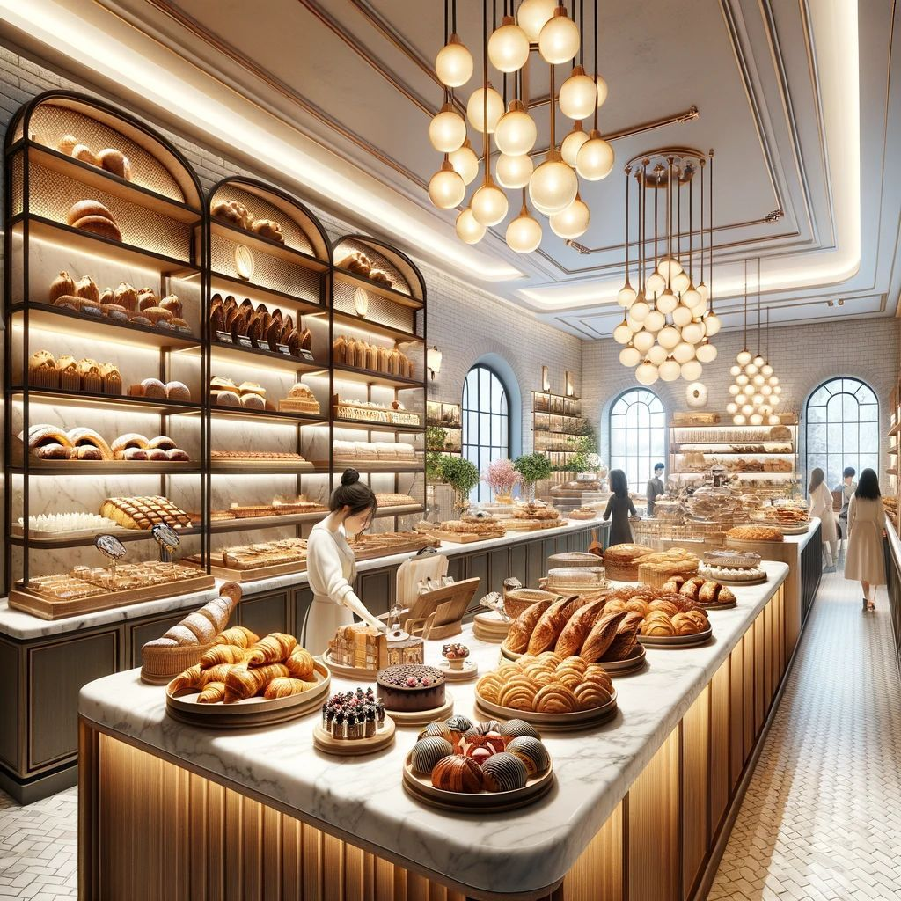

История, традиции и люди, которые создают для вас вкусную выпечку
В 2014 году Мария и Алексей Ивановы открыли маленькую пекарню в центре Москвы. Их цель была простой: печь настоящий хлеб так, как это делали наши бабушки — без разрыхлителей, улучшителей и химических добавок.
Секрет успеха оказался в качестве: они использовали только натуральную закваску, французскую муку и сливочное масло высшего сорта. Первые гости приходили за хлебом за несколько километров.
Сегодня «Бриошь» — это уютная сеть из трёх пекарен, где каждый день выпекается более 50 видов хлеба, круассанов и десертов. Но главное осталось неизменным — любовь к своему делу.

Люди, которые вкладывают душу в каждую булочку
Основатель и шеф-пекарь
Более 15 лет опыта. Стажировалась в лучших пекарнях Парижа.
Сооснователь и управляющий
Отвечает за развитие пекарни и контроль качества.
Кондитер
Создаёт авторские десерты и торты на заказ.
Технолог производства
Разрабатывает новые рецепты и следит за качеством.